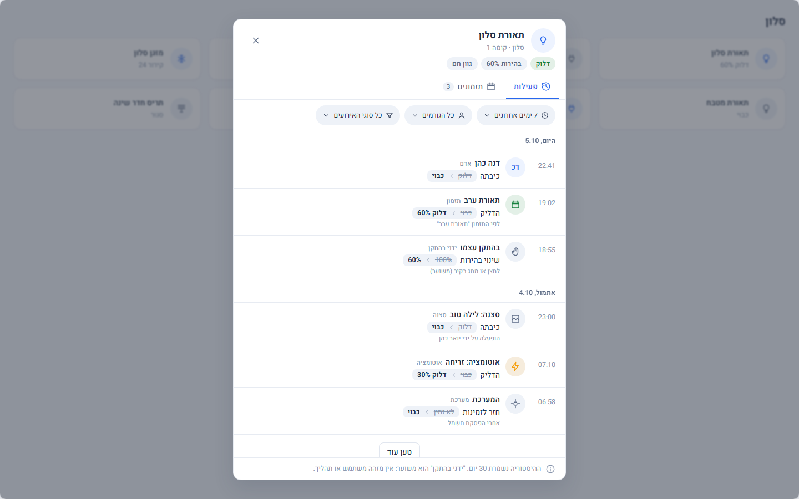
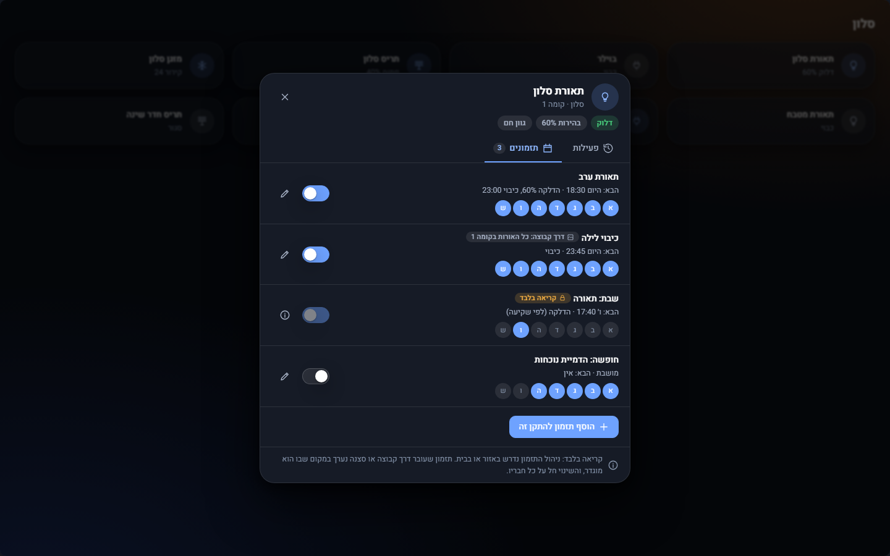
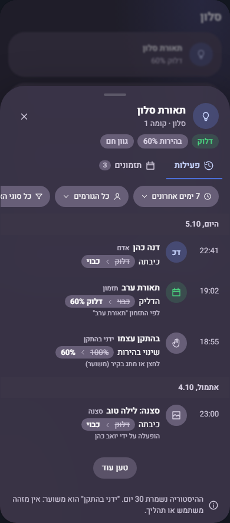

| מדד (שולחן עבודה) | סבב 1 | סבב 2 |
|---|---|---|
| רוחב החלון | 600 פיקסלים | 380 פיקסלים |
| גובה שורת פעילות | כ־86 פיקסלים (שלוש שורות) | כ־52 פיקסלים (שורה וחצי) |
| כותרת | אייקון עגול 44, שם, אזור, שורת תגיות מצב, לשוניות בקו תחתון (כ־200 פיקסלים) | אייקון 34, שם ומצב באותה שורת משנה, בורר שתי לשוניות (כ־110 פיקסלים) |
| מסננים | שלוש כמוסות עם אייקון ותוויות ארוכות | שלוש כמוסות קטנות בקו מתאר, תוויות קצרות |
| הערת שוליים | שתי שורות | שורה אחת קטנה |
| תזמונים | שורה בת שלוש שורות עם שבעה עיגולי ימים | שורה בת שתי שורות; הימים כטקסט ("כל יום", "א׳–ה׳") |
| עומק | מסגרות ופסים בין שורות | קווי הפרדה עדינים ורק במקום שנדרש; צל רך אחד |
| אירועים בלי גלילה (גובה 900) | כ־6 | כ־9 |
גבהים משוערים מצילומי המסך. אותם נתונים, אותם טוקנים וסקינים.



